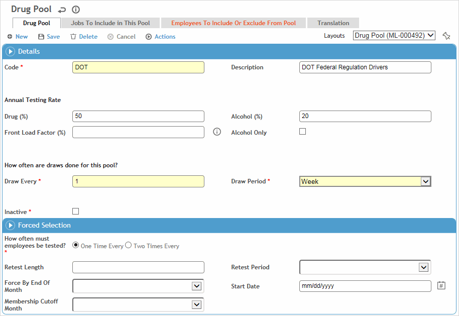

Pools are groupings of employees based on job classification, administrative division, geographic location or other work factors relevant to the organization. Two or more employee pools can be combined in the DrugCombined Pool table to create a new pool for drug testing purposes. Random samples of employees are drawn from the pools for drug and alcohol testing using the information entered for the drug pool codes.
A Forced Selection section allows you to set up a pool that meets stewardship requirements for which you need to draw employees a certain number of times during a year.
An Alcohol Only checkbox may be added to custom layouts to allow you to draw employees for alcohol tests only.
To filter the list of records, enter a few characters in one or more of the fields at the top followed by an asterisk, then press enter.
Click a link to edit, or click New.

Enter a Code and Description for the pool.
Enter the acceptable percentage of Drug and Alcohol levels.
Indicate how often the draw should be repeated.
For a Forced Selection draw:
Indicate how often the employees must be tested, and how long the retest period is.
For Retest Period, if you select Rolling Year, the draw will use the current date when looking back. If you select Calendar Year, the draw will look back the specified number of years from the current date, and then start from January 1st of that year.
Select the Forced by Month and the Start Date and Membership Cutoff Date that determine an employee’s eligibility.
If an employee has not been selected the amount of tests specified (in the Retest Length and Retest Period fields), they will automatically be added for drug draw selection by the end of the Forced By Month.
Note This automatic selection of employees will be distributed evenly over draws during the calendar year up until end of the month specified in the Forced by Month field.
Click Save.
Jobs to Include in This Pool tab: To include particular jobs in this pool, click New and select the GDDLOFB and job position.
Employees to Include or Exclude from Pool tab: To include or exclude employees even if they would normally be excluded (or included) because they match the criteria in the Jobs to Include tab, click New. Select the employee, enter the start and end dates, and indicate if the individual is enrolled in a Rehab program. Select the Exclude checkbox if the employee is to be excluded.